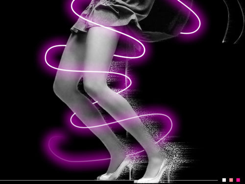

一个 overflow-x: auto 的滚动容器，配上 scroll-snap 就是轮播本体；
左右按钮来自 ::scroll-button，索引圆点来自 ::scroll-marker，
没有任何 JS 事件逻辑。

grid-auto-flow: column 加 grid-auto-columns: 100%，每张一屏，scroll-snap-type: x mandatory 负责吸附，手指、触控板、键盘都能操作。::scroll-button(left/right) 的样式即可，浏览器自动生成按钮元素、自动处理点击滚动和首尾禁用，:disabled 状态也由浏览器维护。scroll-marker-group: after 让容器生成标记组，每个列表项用自己的 ::scroll-marker 当圆点，:target-current 命中当前项，可以把圆点拉长成胶囊。CSS.supports("selector(::scroll-button(left))") 后，才建真实的按钮和圆点，点击走 scrollTo()，滚动时用 scrollLeft 同步高亮。滚动容器有物理边界，所以在前面补一张“最后一张的克隆”、后面补一张“第一张的克隆”； 滚动停稳后再把位置无动画地挪回对应的真实项——两张图同源，用户看不出跳动。
::scroll-button 因此永远不会真的撞到禁用线，无限翻页不必拦截点击。::scroll-marker 用 display: none 藏掉，标记组里只剩 4 个真实项，:target-current 才对得上。scroll-behavior: smooth 会传染给 scrollTo()，所以这里临时把 scroll-behavior 置为 auto 再直接写 scrollLeft，写完再还原，中间不出现倒带动画。scrollend（不支持的浏览器退化为 scroll 防抖），并且指针还按着时跳过这一次归位。